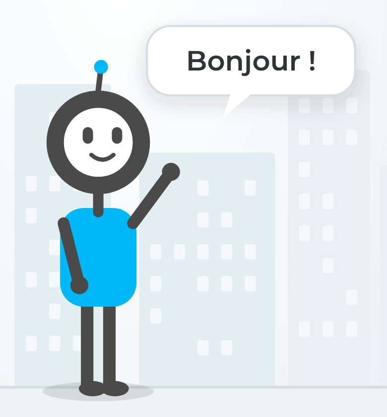
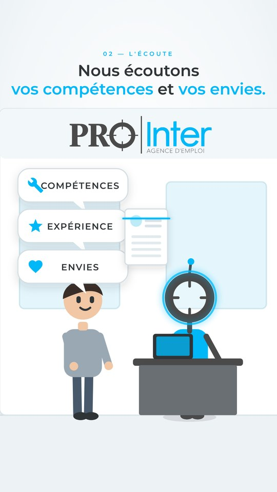
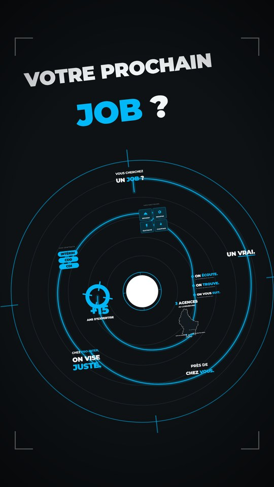

Fiche marketing
22 octobre 2026

Pro sort du logo et dit bonjour.
| Nom | Pro |
| Origine | La cible du « O » du logo PRO-INTER, qui prend vie. |
| Rôle | Il accompagne chaque candidat, de la recherche d'emploi jusqu'au terrain. |
| Promesse | « Chez PRO-INTER, on vise juste » : la bonne mission pour chaque profil. |
| Personnalité | Proche, rassurant, efficace. |
| Couleurs | gris et cyan, celles de votre logo. |
| Ton | Vouvoiement, phrases courtes, toujours positif. |
Les candidats. Intérimaires et demandeurs d'emploi, notamment dans le bâtiment, l'industrie, l'électricité, le chauffage et la ventilation.
Message : « Nous trouvons la mission qui vous correspond, et nous restons à vos côtés. »
Les entreprises. Vos clients qui recrutent en intérim, CDD ou CDI.
Message : « Nous visons juste : le bon profil pour chaque poste. »
Document rédigé par un prestataire pour le compte d'Empira Studio.

Pro accompagne un candidat : l'écoute, le bon poste, le terrain, le suivi et vos 3 agences. Ton chaleureux et rassurant.
Idéale pour : site internet, Facebook, LinkedIn, écran en agence.

Un plan-séquence nerveux : Pro, en viseur, « touche » chaque info en rythme, jusqu'au cœur de la cible. Ton énergique.
Idéale pour : TikTok, Reels Instagram, Stories, publicité.
Chaque vidéo existe avec et sans musique, avec une voix off française.
| TikTok, Reels, Stories | Les deux vidéos, puis une courte vidéo par offre d'emploi : « Pro vise juste : électricien à Esch-sur-Alzette ». |
| Facebook, LinkedIn | Annonces d'emploi illustrées avec Pro, coulisses des agences, conseils aux candidats. |
| Site prointer.lu | Pro en page d'accueil et sur la page de candidature. |
| Vos 3 agences | Vitrine, affiche et écran d'accueil à Dudelange, Esch-sur-Alzette et Mondorf-les-Bains. |
| Supports imprimés | Flyers, cartes de visite, autocollants, kakémono pour les salons de l'emploi. |
Ces déclinaisons peuvent être réalisées par Empira Studio, sur devis.
Conseil : publier régulièrement, deux à trois fois par semaine, et terminer chaque contenu par « Postulez sur prointer.lu ».
Document rédigé par un prestataire pour le compte d'Empira Studio.